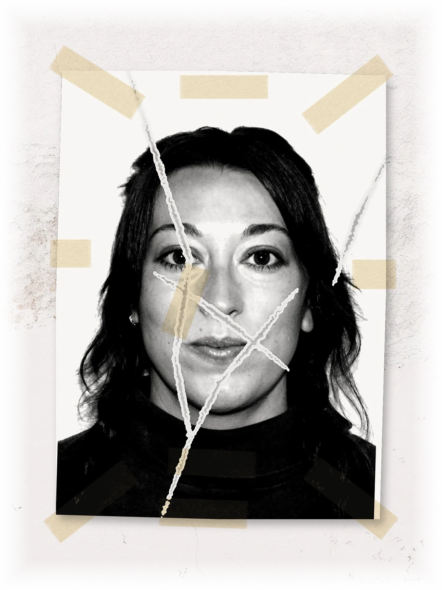

About Katana Calderwood
From living and working in Montana, Asia, Morocco, and Central America to the extreme deserts of Southern California and the Black Rock Desert, Katana has created a versatile and exciting portfolio ranging from designing and building rural Berber public restrooms with local stone masons, to 300,000-square-meter Korean Hyundai training centers, off-grid communal living experiments, and other-worldly stages for Coachella. As Burning Man Project’s first Construction & Planning Specialist, Katana helped manage the construction process and governmental planning of over 25 projects, including Katana’s main project, a complex, multi-million-dollar undertaking instrumental to the event’s operation.
Throughout the years, Katana’s foundation in architectural design sparked a critical realization: the built environment is inherently extractive unless it is meticulously rooted in regenerative design. Driven to understand the macro-forces shaping our ecosystems, Katana transitioned into land-use planning to study systemic land stewardship and preservation.
Today, Katana’s work has evolved into a nomadic, multi-disciplinary practice. Their professional background in blends with original music and multi-media art to explore the intersections of community, alternative living, and creative technology of a diverse range of mediums where they treat sound, physical media, and spatial design as interconnected tools.
In 2026, Katana was a featured artist at a renowned art gathering in Bombay Beach, California, with the debut of the immersive, multi-purpose installation Algo(g)rave: The Manual for Dying. The accompanying audio content was mixed and mastered by Katana and features originals from Katana and 15+ artists from all over the world. The Sunyata Cycles aired on the local radio station KDEZ 91.1 FM on Monday, March 30, 2026.